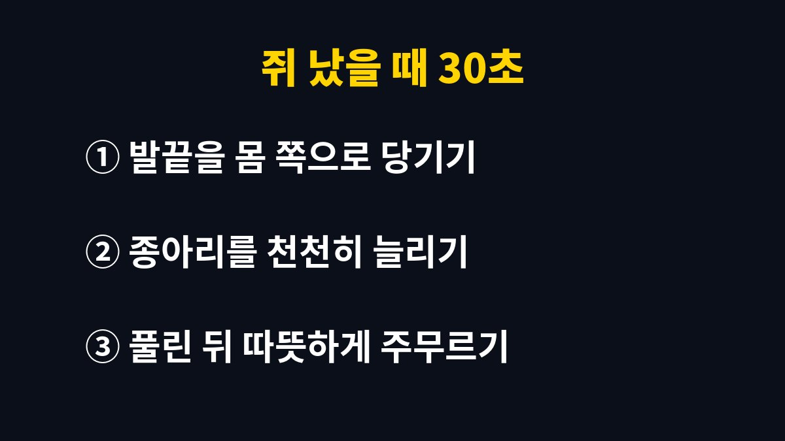
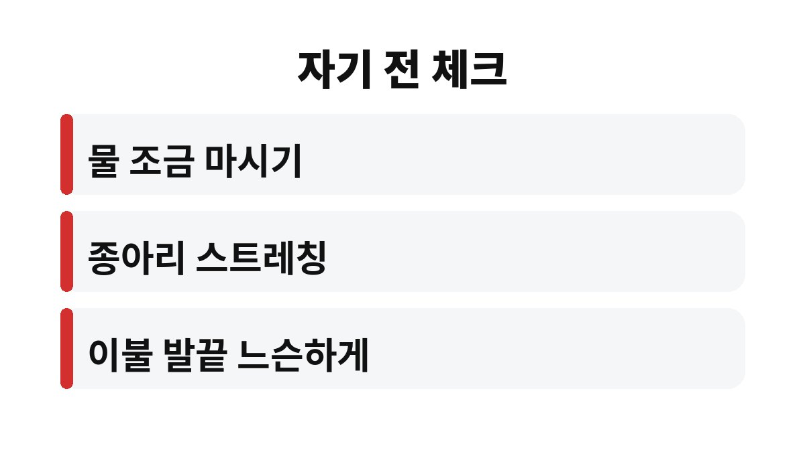

자다가 다리 쥐가 한 달에 여러 번 반복된다면 근육이 보내는 경고 신호일 수 있다. 특히 40대 직장인이라면 낮의 습관이 밤의 종아리를 괴롭히고 있는 건 아닌지 짚어볼 때다. 그렇다면 어떤 습관이 범인일까?
쥐는 근육이 갑자기 뭉치며 굳는 현상이다. 낮에는 걸어 다니며 근육이 계속 움직이지만 밤에는 같은 자세로 오래 누워 있다. 이때 발끝이 아래로 쭉 뻗은 채 종아리 근육이 짧아진 상태로 오래 있으면 작은 자극에도 확 뭉치기 쉽다.
또 하나는 몸속 수분과 전해질이다. 땀을 많이 흘렸거나 물을 거의 안 마신 날, 술을 마신 날엔 근육이 예민해질 수 있다. 하루 종일 서 있거나 반대로 앉아만 있던 날도 종아리가 피곤해져 밤에 신호를 보내곤 한다.

당황해서 발을 비비거나 억지로 일어나 걷는 사람이 많은데, 먼저 해야 할 건 따로 있다. 누운 채로 무릎을 편 다음 발끝을 몸 쪽으로 천천히 당겨 종아리를 늘려주면 된다. 아프다고 급하게 하지 말고 숨을 내쉬며 서서히 하는 것이 요령이다.
어느 정도 풀리면 종아리를 손으로 가볍게 주무르고 따뜻하게 해주자. 쥐가 풀린 뒤에도 근육이 뻐근하게 남는 건 흔한 일이니 너무 놀라지 않아도 된다. 다만 같은 자리에 다시 올 수 있으니 바로 잠들지 말고 한 번 더 늘려주면 좋다.
가장 쉬운 것부터 해보자. 자기 전 종아리 스트레칭을 1분만 해도 근육이 짧아진 채 굳는 걸 막는 데 도움이 된다. 저녁에 물을 너무 적게 마시지 않는지도 점검하자. 한 번에 많이 마시면 화장실 때문에 깨니, 낮 동안 나눠 마시는 게 낫다.
이불이 발끝을 꽉 누르는 것도 은근한 원인이다. 발끝이 아래로 눌린 채 자면 종아리가 계속 당겨진 상태가 되기 쉽다. 이불을 느슨하게 하거나 발쪽을 조금 띄워보자. 높은 구두나 딱딱한 신발로 하루를 보냈다면 퇴근 후 종아리를 풀어주는 습관도 필요하다.
겨울이 다가오면 쥐가 더 잦아졌다고 느끼는 분도 많다. 날씨가 쌀쌀해지면 몸이 움츠러들고 혈액순환이 둔해지기 쉬운데, 다리가 차가운 채로 잠들면 근육이 더 쉽게 굳을 수 있다. 양말을 신거나 발을 따뜻하게 하고 자는 것만으로도 도움이 되는 분들이 있다.
운동을 갑자기 많이 한 날도 조심하자. 평소 안 쓰던 종아리를 무리하게 쓰면 그날 밤 근육이 예민해져서 쥐가 올 수 있다. 반대로 하루 종일 의자에 앉아 있다가 퇴근길에 갑자기 뛰는 것도 좋지 않다. 가볍게 걷고 늘리는 습관을 매일 조금씩 이어가는 게 훨씬 낫다.
카페인과 술도 한 번 돌아보자. 늦은 저녁의 커피나 술은 수면을 얕게 만들고 몸속 수분 균형을 흔들 수 있다. 쥐가 자주 나는 분이라면 일주일만 저녁 습관을 바꿔 보고 달라지는지 기록해 보면 내 원인이 어디에 가까운지 감이 온다.

자다가 다리 쥐가 3번 넘었다면 지금 아래 순서로 생활을 점검해 본다. 몰랐다 후회하는 이유는 대부분 반복될 때까지 방치했기 때문이다.
가끔 한두 번 나는 쥐는 대부분 생활 습관에서 오는 경우가 많다. 하지만 거의 매일 반복되거나, 쥐가 아닌 다리 붓기·저림·통증이 함께 있거나, 낮에도 다리가 자꾸 아프다면 이야기가 다르다. 복용 중인 약이나 혈관, 신경, 영양 문제가 숨어 있을 수도 있어서 전문의 진료를 받아보는 편이 안전하다.
오늘 밤 자기 전에 종아리부터 1분 늘려보시는 건 어떨까요? 여러분은 한 달에 몇 번이나 쥐가 나세요? 댓글로 알려주시고, 도움이 됐다면 구독도 눌러주세요.
※ 이 글은 일반적인 건강 정보이며 진단·치료를 대신하지 않습니다. 증상이 반복되면 전문의 상담을 권장합니다.